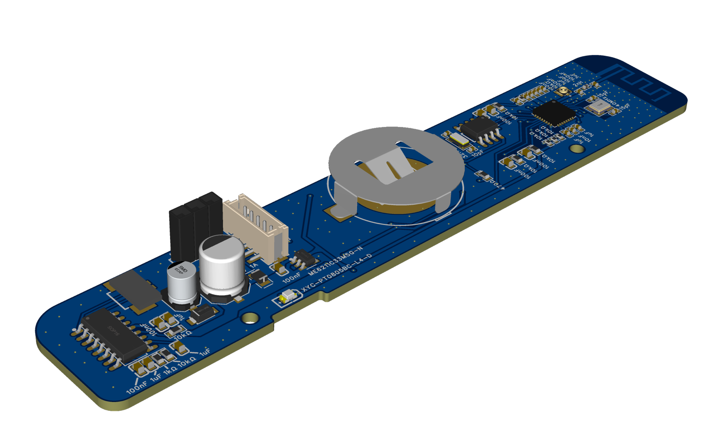
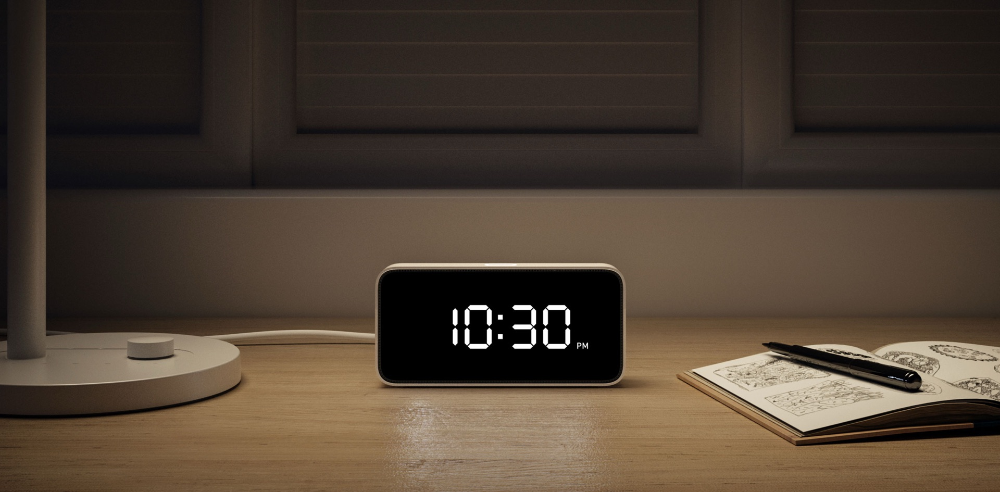
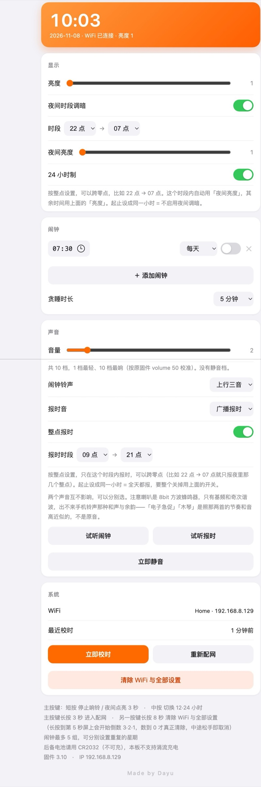
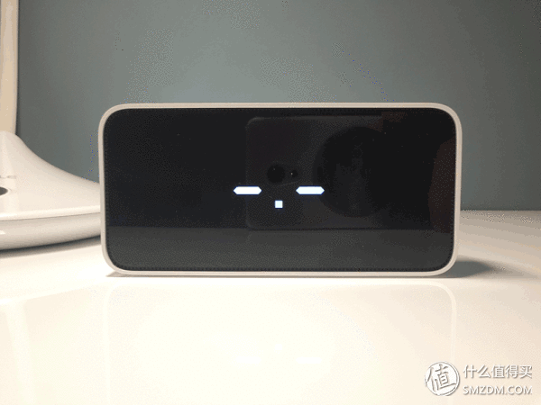

四位七段显示
TM1652 单线驱动，7 级亮度，夜间时段自动调暗。铃铛、静音、闹钟、AM/PM 与 WiFi 图标齐全。
全部在浏览器里完成，无需安装任何工具。固件由浏览器直接写入设备，不会上传你的数据。推荐使用电脑版 Chrome 或 Edge，并用 USB-C 数据线连接设备。
当前发布版本 v3.15 · 2026-11-08
USB-C 数据线连接电脑与闹钟
首次烧录用完整固件，日常升级用应用固件
在弹窗中确认串口并等待写入完成
烧录过程请保持 USB 连接不要断开。烧录完成后设备会自动重启；首次使用会开启 XiaoMiClock 热点，手机连上后打开 192.168.4.1 完成配网。Windows 10/11 与 macOS 通常无需额外安装串口驱动。
主板、实拍、网页设置和等待配网动画。点击任意图片查看大图。




固件从 v2.0 重写至今，功能都经过实机验证。
TM1652 单线驱动，7 级亮度，夜间时段自动调暗。铃铛、静音、闹钟、AM/PM 与 WiFi 图标齐全。
CR2032 后备电池，断电不走时。联网后自动 NTP 校时，并每 6 小时同步一次。
每组独立开关、时间与星期重复。响铃 60 秒超时，贪睡可选 0 / 3 / 5 / 10 分钟。
按广播授时规矩从 :59:55 起响，5.2 秒后压在整点。可设定允许报时的时段，支持跨零点。
上行三音、广播报时、电子急促与木琴。闹钟和整点报时分开选择，音量 1~10 档。
手机连上 XiaoMiClock 热点，浏览器打开 192.168.4.1 即可配网。所有设置存 NVS，断电不丢。
ESP32-C3 主控搭配 TM1652 灯板、DS1302 时钟与 PAM8403 功放，全部元件手工焊接。
单板集成主控、走时、灯板驱动和音频功放。USB-C 原生 USB CDC，烧录与串口日志共用一根线。
烧录或配网遇到问题时，先看这里。
XiaoMiClock。手机连上它，浏览器打开
192.168.4.1，选择家里的 2.4GHz WiFi 并输入密码。连接成功后热点会自动关闭，
之后用路由器分配的地址打开设置页即可。